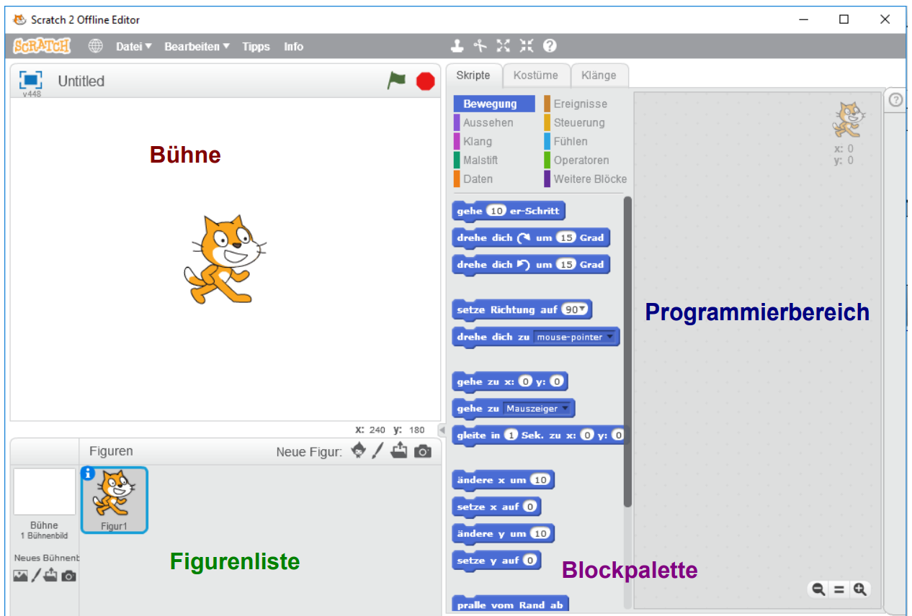
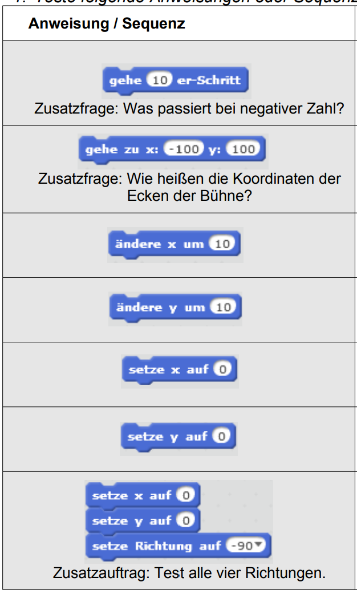
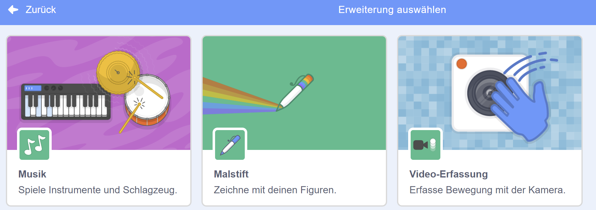

Scratch Programmieren - Teil 1
Hier lernst du nun die ersten Schritte beim Programmieren mit Scratch.
Einführung
Lese dir alles gründlich durch und befolge die Anweisungen.
Lernziele
- Du findest dich in der Scratch-Oberfläche zurecht.
- Du kannst Blöcke ausprobieren und zu Sequenzen verbinden.
- Du startest Programme mit der grünen Fahne.
- Du erklärst die Begriffe Bühne, Blockpalette und Programmierbereich.
Hier lernst du mit Scratch Programmieren
- Scratch ist eine Programmierumgebung, mit der du ohne komplizierten Syntax die Grundideen des Programmierens kennenlernst.
- Du übst, wie man Programme als Anweisungen und Sequenzen aufbaut, Figuren bewegt und zeichnen lässt, und wie man mit Ereignissen (z. B. Tastendruck, grüne Fahne) Aktionen auslöst.
- Außerdem lernst du wichtige Strukturen wie Schleifen, Verzweigungen und Variablen kennen.
- Am Ende kannst du das Gelernte in einem kleinen Spielprojekt umsetzen und es mit eigenen Ideen erweitern.
- Starte Scratch, indem du das Programm Scratch auf dem Computer oder im Browser die Seite scratch.mit.edu aufrufst. Klicke dort auf "Erstellen", um ein neues Projekt zu starten.
Programmierumgebung
Die Programmierumgebung von Scratch sieht so aus:
- Die Scratch-Oberfläche teilt sich in vier Bereiche auf.
- Auf der Bühne läuft alles ab, was du programmierst. Dort machen deine Figuren das, was du ihnen im Programmierbereich aufträgst.
- In der Figurenliste findest du alle Figuren, die in deinem Projekt dabei sind. Anfangs ist es nur eine Figur. Du kannst dort auch neue Figuren erzeugen und bestimmte Eigenschaften festlegen. Außerdem findest du dort auf der linken Seite auch die Bühne(n).
- In der Blockpalette findest du die Blöcke, die du zum Programmieren brauchst. Du kannst sie entweder dort direkt durch einen Mausklick testen, oder mit der Maus in den Programmierbereich ziehen und an ein Programm anfügen.

- Du kannst zuerst die Sprache ändern. Klicke dazu auf den Globus links oben neben Datei und wähle die gewünschte Sprache aus.
- Speichere dein Projekt erst einmal ab. Dazu wählst du Datei - Speichern, wählst den Ordner aus, den du für deine Programme angelegt hast und gibst den Dateinamen 01katze ein. Die Dateiendung .sb2 wird automatisch ergänzt.
- Gib deiner Katze einen Namen. Klicke dazu auf das kleine "i" links oben neben der Katze. Es öffnet sich ein Bereich, in dem du den Namen ändern kannst. Schreibe statt "Figur 1" den Namen deiner Katze, z.B. Mieze. Wenn du mit dem Pfeil zurückgehst, steht der Name jetzt unter der Katze.
Öffne das Programm und befolge die Anweisungen.
Multiple Choice
Jetzt kannst du dein Wissen testen! Bearbeite die Multiple Choice Fragen.
Bewegung und Sequenzen
Die Katze (oder jede andere Figur) kann sich bewegen. Wie sie sich bewegen soll, müssen wir ihr sagen.
In der Blockpalette findest du viele Blöcke für die Bewegung. Du kannst sie direkt testen oder in den Programmierbereich ziehen und anklicken. Der Vorteil: Du kannst Blöcke aneinanderhängen und sie nacheinander ausführen.

Sequenz
- Jeder Auftrag, den du deiner Katze gibst, heißt Anweisung (z.B. "gehe 10er-Schritt").
- Mehrere Anweisungen nacheinander nennt man Sequenz.
- Teste alle Anweisungen oder Sequenzen und schreibe auf, was passiert.
Tipp: Schreibe es auf ein Blatt.
Übung: Bewegungs-Sequenz
- Lass die Katze 10 Schritte gehen.
- Drehe sie um 15 Grad.
- Wiederhole die Sequenz 6 Mal.
Speichern und Zeichnen
- Bevor du weitermachst, speichere deine Datei unter 02katze_bewegen ab (Datei - Speichern unter).
- Du kannst Blöcke wieder löschen, die du nicht mehr brauchst oder falsch eingefügt hast. Ziehe den Block zurück in die Blockpalette oder wähle per Rechtsklick "Löschen".
- Um besser sehen zu können, was die Katze gemacht hat, lassen wir sie Spuren zeichnen: Wähle "Malstift", setze zuerst den Block zum Wegwischen der Spuren, dann den Block zum Einschalten des Stiftes vor die Bewegungen, und den Block zum Ausschalten danach.
- Außerdem machen wir unsere Katze etwas kleiner: Klicke in der Menüleiste auf das Icon "Verkleinern" und klicke mehrfach auf die Katze.
- Wir können das Programm mit der grünen Fahne starten und mit dem Stoppschild beenden. Dazu brauchst du einen Block aus "Ereignisse".
- Setze den Ereignisblock "Wenn Fahne angeklickt" an den Anfang deiner Sequenz.

Weitere Aufträge
- Schreibe ein kleines Programm, welches zuerst die Katze ins linke obere Eck der Bühne setzt und sie von dort aus ein Rechteck um die Bühne zeichnen lässt und zeige es deiner Lehrerin.
- Schreibe ein kleines Programm, welches zuerst die Katze ins linke untere Eck der Bühne setzt und sie dann eine Treppe mit unterschiedlich großen Stufen nach oben steigen lässt und zeige es deiner Lehrerin.
- Schreibe ein kleines Programm, welches die Katze ein Quadrat zeichnen lässt und zeige es deiner Lehrerin.
- Schreibe ein kleines Programm, welches die Katze ein gleichseitiges Dreieck zeichnen lässt und zeige es deiner Lehrerin.
Tipp: Speichere jedes Programm unter einem neuen Namen.
Lückentext (Drag & Drop)
Begriffe wiederholen
Mini-Projekt: Fang das Ziel
Baue ein kleines Spiel, in dem die Katze einen Stern fängt.
Schritte
- Erzeuge eine neue Figur (z.B. Stern).
- Bewege die Katze mit den Pfeiltasten (Ereignisse + Bewegung).
- Lass den Stern an eine zufällige Position springen, wenn er berührt wird.
- Füge eine Variable "Punkte" hinzu und erhöhe sie bei jedem Treffer.
Zusatzideen
- Füge einen Timer hinzu (z.B. 30 Sekunden).
- Spiele einen Sound ab, wenn der Stern gefangen wird.
- Ändere die Größe des Sterns zufällig.
Zeige dein Projekt deiner Lehrerin.